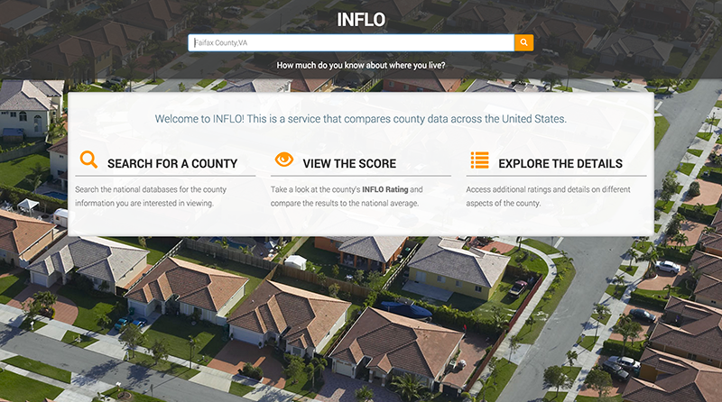

Get to Know Your Neighborhood

A view of neighborhood demographic, environmental and hazard information.


Rapidly check for food and drug refusals
Providing consumers with quick access to global food and drug refusals.

Bringing Perspective to Unstructured Data
A platform to visualize unstructured data
Analyze for Data Center Usage Efficiency
A dashboard that outlines data center usage costs and provides comparisons across data centers.

Move Smarter
Explore and compare counties to help decide where to move.
Automate Source Selection
Electronic means to conduct evaluation and source selection
Search Awarded Contracts
Access details of every contract within the Federal Government.
User Experience Design
Octo's Approach to User Experience Design (UXD)
Octo's Case Study on Air National Guard
/
Octo's Case Study on Census
Octo's Case Study on United States Army Corps of Engineers
Octo's Case Study on National Institutes of Health
Octo's Case Study on Department of Labor

Architecting Complex Data Processing Systems to Move the Census Forward for 2017
Helping to Improve the Clinical Research Mission at NIH Through Technology Innovation
Helping the U.S Army Transition to a Scalable Enterprise Service Delivery Model